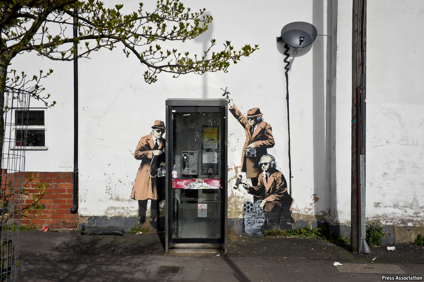

2021-03-26T09:13:30+00:00
间谍与技术
机器情报
情报机构正在与AI的希望和陷阱搏斗
就使用人工智能（AI）而言，情报机构探索它的历史比大多数人都长。在冷战时，美国国家安全局（NSA）和英国政府通讯总部（GCHQ）就摸索了早期的AI，以帮助转录和翻译他们在六七十年代开始拦截到的海量苏联电话。
但那会儿技术还不成熟。一位前欧洲情报官员说，他所在的机构在2000年代并未在阿富汗使用自动转录或翻译，而是依靠母语者。如今特工们希望做得更好。近年来让商业界对AI大感兴趣的那些趋势——更多的数据、更好的算法以及更高的处理能力推动了它的繁荣——也给间谍机构带来了宏大的构想。
GCHQ在2月24日发布了一篇有关AI如何可能改变其工作的论文。“机器辅助的事实检查”可以帮助发现伪造的图像，对比受信赖的来源查找虚假信息，并识别传播该图像的社交媒体机器人。人工智能或许可以通过“分析网络和设备上的活动模式”来阻止网络攻击，并通过发现可疑的金融交易链来打击有组织的犯罪。
其他资源不那么丰富的组织已经展示了AI的潜力。美国非政府组织“核威胁倡议”（Nuclear Threat Initiative）最近展示，把机器学习应用于公开可用的贸易数据，可能会发现以前未被察觉的公司和组织涉嫌参与核武器材料非法贸易。但是，间谍机构可使用的并不限于公开数据。
一些人希望，借助其窥探私密信息的能力，这类不起眼的应用可以为成为AI驱动的巨头铺平道路。美国人工智能国家安全委员会（National Security Commission on AI）于3月1日发布的一份报告热情洋溢地展望“人工智能将彻底改变情报实践”。这个位高权重的研究团队由谷歌母公司Alphabet的前执行主席埃里克·施密特和前国防部副部长鲍勃·沃克（Bob Work）担任联席主席。
这份报告不乏雄心壮志。它说，到2030年，美国的大约17个间谍机构应该会建成一个“持续学习分析引擎的联合架构”，能够处理从人类情报到卫星图像的一切事务，以预见潜在的威胁。委员会对五角大楼应对新冠疫情的方式表示赞赏——它整合了数十个数据集以识别疫情热点并管理供应需求。
然而，可以用在公共卫生里的方法要用在国家安全上并不总是那么容易。西方情报机构必须应付有关如何收集和使用私人数据的法律。GCHQ在其论文中表示，它将注意系统性偏差，例如语音识别软件是否对某些群体比其他群体更有效，并且在其算法的误差限和不确定性方面保持透明。美国间谍的说法更含混，说他们将尊重“人的尊严、权利和自由”。这些差异可能需要消除。在位于华盛顿的战略与国际研究中心（CSIS）发表的一份报告中，前美国特工近期成立的一个工作组提出的一个建议是“五眼”情报联盟（美国、澳大利亚、英国、加拿大和新西兰）创建一个共享云服务器来存储数据。
无论如何，情报领域的人工智能所面临的实践上的限制不亚于道德约束。机器学习擅长发现模式（例如独特的手机使用模式），但并不擅长预测个人行为。在数据稀缺的情况下尤其如此，例如在反恐行动中。预测性警用模型可以处理每年成千上万个盗窃案的数据。恐怖袭击事件要罕见得多，因此也更难分析学习。
这种稀缺带来了另一个问题——一个对于那些考虑大规模筛查罕见病的医护人员来说非常熟悉的问题。任何预测模型都会产生误报，把无辜者标记为调查对象。精心的设计可以降低误报率。但是，由于“基本比率”还要更低（谢天谢地，恐怖分子很少），即使是设计合理的系统也可能会派遣大量间谍去白费力气。
而且那些确实存在的数据可能并不适用。例如，人们还没有把来自无人机摄像头、侦察卫星和截获的电话中的数据做成对机器学习有用的格式或加标注。CSIS报告指出，解决这个问题“繁琐、耗时且仍然主要是人工任务，而机构之间乃至内部不同的标注标准更是令它雪上加霜”。那可能并不是有志做间谍的人想要做的工作。
2021-03-26T09:13:30+00:00
Spies and technology
Machine intelligence
Intelligence agencies are grappling with the promise—and pitfalls—of AI
WHEN IT comes to using artificial intelligence (AI), intelligence agencies have been at it longer than most. In the cold war America’s National Security Agency (NSA) and Britain’s Government Communications Headquarters (GCHQ) explored early AI to help transcribe and translate the enormous volumes of Soviet phone-intercepts they began hoovering up in the 1960s and 1970s.
Yet the technology was immature. One former European intelligence officer says his service did not use automatic transcription or translation in Afghanistan in the 2000s, relying on native speakers instead. Now the spooks are hoping to do better. The trends that have made AI attractive for business in recent years—more data, better algorithms, and more processing power to make it all hum—are giving spy agencies big ideas, too.
On February 24th GCHQ published a paper on how AI might change its work. “Machine-assisted fact-checking” could help spot faked images, check disinformation against trusted sources and identify social-media bots that spread it. AI might block cyber-attacks by “analysing patterns of activity on networks and devices”, and fight organised crime by spotting suspicious chains of financial transactions.
Other, less well-resourced organisations have already shown what is possible. The Nuclear Threat Initiative, an American NGO, recently showed that applying machine learning to publicly available trade data could spot previously unknown companies and organisations suspected of involvement in the illicit trade in materials for nuclear weapons. But spy agencies are not restricted to publicly available data.
Some hope that, aided by their ability to snoop on private information, such modest applications could pave the way to an AI-fuelled juggernaut. “AI will revolutionise the practice of intelligence,” gushed a report published on March 1st by America’s National Security Commission on Artificial Intelligence, a high-powered study group co-chaired by Eric Schmidt, a former executive chairman of Alphabet, Google’s parent company, and Bob Work, a former deputy defence secretary.
The report does not lack ambition. It says that by 2030 America’s 17 or so spy agencies ought to have built a "federated architecture of continually learning analytic engines" capable of crunching everything from human intelligence to satellite imagery in order to to foresee looming threats. The commission points approvingly to the Pentagon’s response to covid-19, which integrated dozens of data sets to identify covid-19 hotspots and manage demand for supplies.
Yet what is possible in public health is not always so easy in national security. Western intelligence agencies must contend with laws governing how private data may be gathered and used. In its paper, GCHQ says that it will be mindful of systemic bias, such as whether voice-recognition software is more effective with some groups than others, and transparent about margins of error and uncertainty in its algorithms. American spies say, more vaguely, that they will respect “human dignity, rights, and freedoms”. These differences may need to be ironed out. One suggestion made by a recent task-force of former American spooks in a report published by the Centre for Strategic and International Studies (CSIS) in Washington was that the “Five Eyes” intelligence alliance—America, Australia, Britain, Canada and New Zealand—create a shared cloud server on which to store data.
In any case, the constraints facing AI in intelligence are as much practical as ethical. Machine learning is good at spotting patterns—such as distinctive patterns of mobile-phone use—but poor at predicting individual behaviour. That is especially true when data are scarce, as in counter-terrorism. Predictive-policing models can crunch data from thousands of burglaries each year. Terrorist attacks are much rarer, and therefore harder to learn from.
That rarity creates another problem, familiar to medics pondering mass-screening programmes for rare diseases. Any predictive model will generate false positives, in which innocent people are flagged for investigation. Careful design can drive the false-positive rate down. But because the "base rate" is lower still—there are, mercifully, very few terrorists—even a well-designed system risks sending large numbers of spies off on wild-goose chases.
And those data that do exist may not be suitable. Data from drone cameras, reconnaissance satellite and intercepted phone calls, for instance, are not currently formatted or labelled in ways that are useful for machine learning. Fixing that is a “tedious, time-consuming, and still primarily human task exacerbated by differing labelling standards across and even within agencies”, notes the CSIS report. That may not be quite the sort of work that would-be spies signed up for. ■
2021-03-26T09:13:30+00:00
間諜與技術
機器情報
情報機構正在與AI的希望和陷阱搏鬥
就使用人工智能（AI）而言，情報機構探索它的歷史比大多數人都長。在冷戰時，美國國家安全局（NSA）和英國政府通訊總部（GCHQ）就摸索了早期的AI，以幫助轉錄和翻譯他們在六七十年代開始攔截到的海量蘇聯電話。
但那會兒技術還不成熟。一位前歐洲情報官員說，他所在的機構在2000年代並未在阿富汗使用自動轉錄或翻譯，而是依靠母語者。如今特工們希望做得更好。近年來讓商業界對AI大感興趣的那些趨勢——更多的數據、更好的算法以及更高的處理能力推動了它的繁榮——也給間諜機構帶來了宏大的構想。
GCHQ在2月24日發布了一篇有關AI如何可能改變其工作的論文。“機器輔助的事實檢查”可以幫助發現偽造的圖像，對比受信賴的來源查找虛假信息，並識別傳播該圖像的社交媒體機器人。人工智能或許可以通過“分析網絡和設備上的活動模式”來阻止網絡攻擊，並通過發現可疑的金融交易鏈來打擊有組織的犯罪。
其他資源不那麼豐富的組織已經展示了AI的潛力。美國非政府組織“核威脅倡議”（Nuclear Threat Initiative）最近展示，把機器學習應用於公開可用的貿易數據，可能會發現以前未被察覺的公司和組織涉嫌參與核武器材料非法貿易。但是，間諜機構可使用的並不限於公開數據。
一些人希望，藉助其窺探私密信息的能力，這類不起眼的應用可以為成為AI驅動的巨頭鋪平道路。美國人工智能國家安全委員會（National Security Commission on AI）於3月1日發布的一份報告熱情洋溢地展望“人工智能將徹底改變情報實踐”。這個位高權重的研究團隊由谷歌母公司Alphabet的前執行主席埃里克·施密特和前國防部副部長鮑勃·沃克（Bob Work）擔任聯席主席。
這份報告不乏雄心壯志。它說，到2030年，美國的大約17個間諜機構應該會建成一個“持續學習分析引擎的聯合架構”，能夠處理從人類情報到衛星圖像的一切事務，以預見潛在的威脅。委員會對五角大樓應對新冠疫情的方式表示讚賞——它整合了數十個數據集以識別疫情熱點並管理供應需求。
然而，可以用在公共衛生里的方法要用在國家安全上並不總是那麼容易。西方情報機構必須應付有關如何收集和使用私人數據的法律。GCHQ在其論文中表示，它將注意系統性偏差，例如語音識別軟件是否對某些群體比其他群體更有效，並且在其算法的誤差限和不確定性方面保持透明。美國間諜的說法更含混，說他們將尊重“人的尊嚴、權利和自由”。這些差異可能需要消除。在位於華盛頓的戰略與國際研究中心（CSIS）發表的一份報告中，前美國特工近期成立的一個工作組提出的一個建議是“五眼”情報聯盟（美國、澳大利亞、英國、加拿大和新西蘭）創建一個共享雲服務器來存儲數據。
無論如何，情報領域的人工智能所面臨的實踐上的限制不亞於道德約束。機器學習擅長發現模式（例如獨特的手機使用模式），但並不擅長預測個人行為。在數據稀缺的情況下尤其如此，例如在反恐行動中。預測性警用模型可以處理每年成千上萬個盜竊案的數據。恐怖襲擊事件要罕見得多，因此也更難分析學習。
這種稀缺帶來了另一個問題——一個對於那些考慮大規模篩查罕見病的醫護人員來說非常熟悉的問題。任何預測模型都會產生誤報，把無辜者標記為調查對象。精心的設計可以降低誤報率。但是，由於“基本比率”還要更低（謝天謝地，恐怖分子很少），即使是設計合理的系統也可能會派遣大量間諜去白費力氣。
而且那些確實存在的數據可能並不適用。例如，人們還沒有把來自無人機攝像頭、偵察衛星和截獲的電話中的數據做成對機器學習有用的格式或加標註。CSIS報告指出，解決這個問題“繁瑣、耗時且仍然主要是人工任務，而機構之間乃至內部不同的標註標準更是令它雪上加霜”。那可能並不是有志做間諜的人想要做的工作。